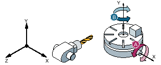

Maschinenkinematik mit Schwenktisch.
1. Rundachse (A) im Schwenktisch dreht um die Maschinenachse X.
Winkelbereich Rundachse 1 (A) von -90 Grad bis +90 Grad.
2. Rundachse (B) im Schwenktisch dreht um die Maschinenachse Y.
Winkelbereich Rundachse 2 (B) von 0 Grad bis 360 Grad (Modulo 360).
Maschinenhersteller hat in der IBN Schwenken den Richtungsbezug auf Rundachse 1 (A) eingestellt.
Im Schwenkzyklus wird eine Drehung (ZYX) um Y=30 Grad programmiert.
Grundstellung der Kinematik (B = 0 Grad, A = 0 Grad)
Rundachse B fährt in positiver Richtung auf +30 Grad.
Rundachse A fährt auf 90 Grad.
Rundachse B fährt auf 210 Grad (30 Grad - 180 Grad = -150 Grad = 210 Grad.
Rundachse A fährt auf 90 Grad.
Mit beiden Einstellungen der Richtung, "Minus" oder "Plus", kann ein Werkstück mit geschwenkten Ebenen bearbeitet werden. Die beiden von der NC berechneten Lösungen unterscheiden sich um 180 Grad (siehe Rundachse B).
Die „Plus“ Lösung entspricht hier der Lösung ohne zusätzliche Drehung im Actframe (180° in Z).
Siehe auch:
Beispiel 1 - CYCLE800